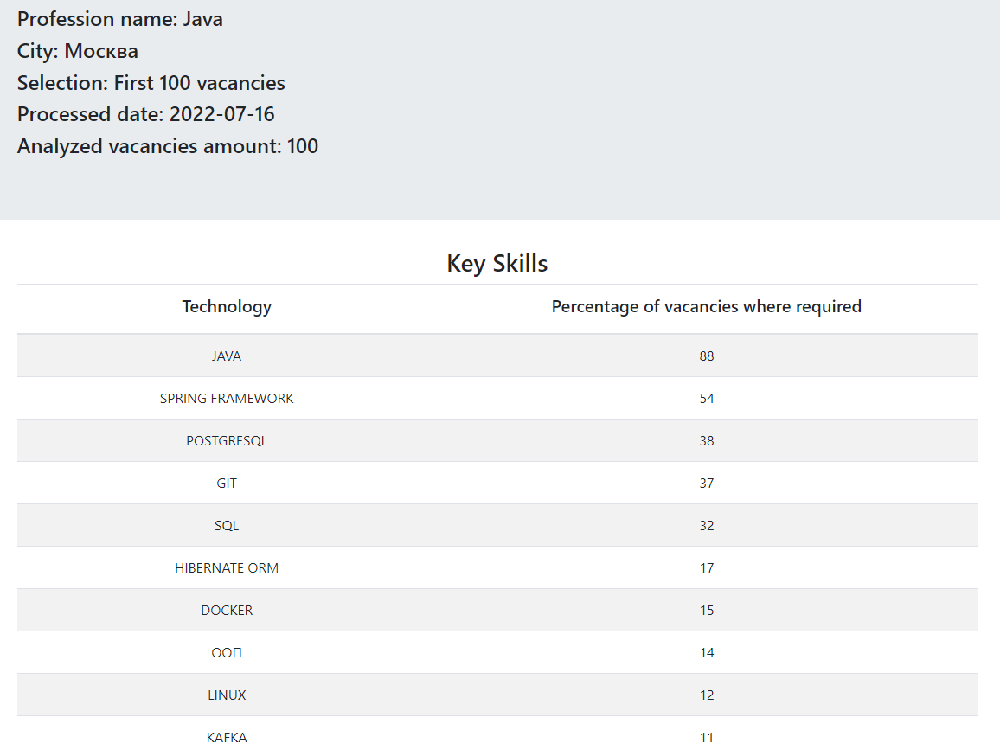

Это новая версия проекта. От старой версии она отличается использованием более современного стека технологий, а также работает непосредственно с API портала Head Hunters Russia через REST интерфейс.
Старая версия запрашивает веб-страницы портала, а затем распарсивает их с помощью библиотеки JSoup. Это гораздо медленнее подхода, используемого в новой версии, а также не всегда срабатывает, с тех пор как Head Hunters стал использовать капчу.
Maven
Spring Boot 2
Spring MVC
Spring Data JPA
Hibernate
JUnit 5
Thymeleaf
Bootstrap 4
Данное приложение составляет список ключевых навыков для указанной пользователем профессии.
Для каждого ключевого навыка указывается процент вакансий, требующих его знание, от общего числа проанализированных вакансий по указанной профессии.
Информация о вакансиях запрашивается через API портала Head Hunters Russia.
Пользователь вводит название интересующей его профессии, также он может ввести название города, в котором необходимо осуществлять поиск вакансий.
В случае если пользователь не ввел название города, поиск вакансий будет осуществляться по всем городам России.
Доступна возможность выбрать какое количество вакансий (первые 100, 500 или 2000 из выборки Head Hunters Russia)
необходимо проанализировать для сбора информации о требующихся ключевых навыках.
Размер выборки влияет на время составления списка ключевых навыков.
После анализа выборки вакансий пользователю представляется список ключевых навыков, требующихся для выбранной им профессии. Для каждого ключевого навыка из списка указывается процент вакансий, требующих его знание, от общего числа проанализированных вакансий по указанной профессии.
Результат агрегации ключевых навыков по указанной профессии за конкретную дату сохраняется в базу данных приложения.
